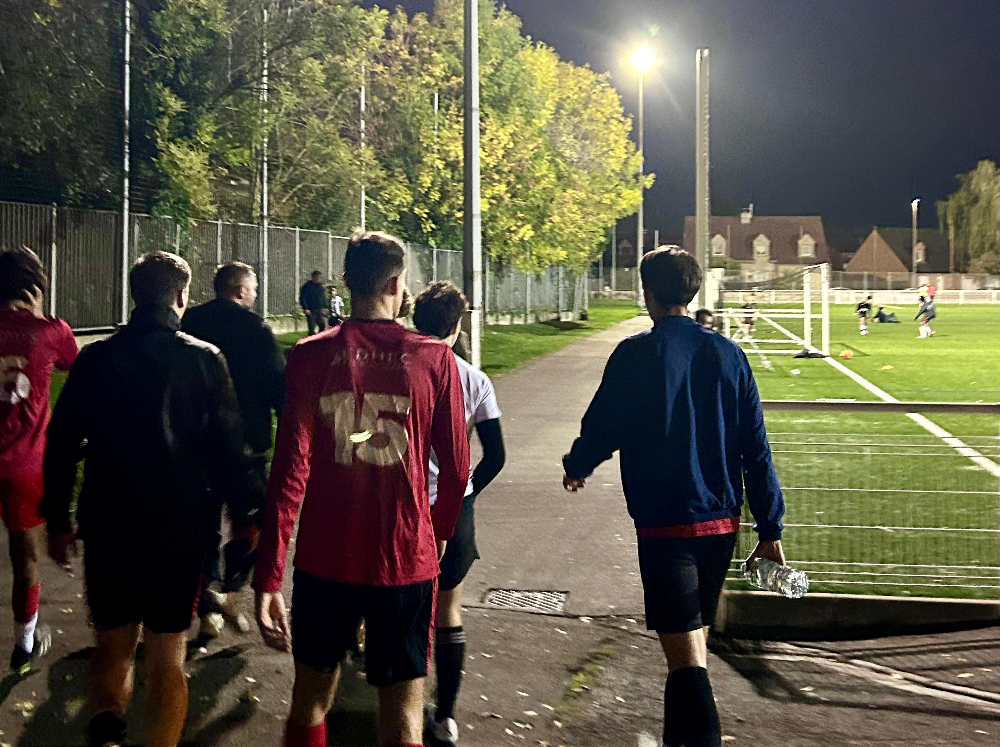

Sports hold a central place in my journey, not only as a physical activity but above all as a school of method, discipline, and strategy.
I play eleven-a-side football with EDHEC FC and have had the opportunity to be scouted and selected to represent the school in national and inter-university competitions. This year, our team will compete in the University Championship, the French University Cup, and the Saint-Gobain Tournament — one of the most prestigious student events in Europe.
These tournaments bring together students from leading French and European schools, united by a competitive spirit supported by major institutions in finance, consulting, and industry such as Paribas, Société Générale, J.P. Morgan, Crédit Agricole CIB, Rothschild & Co, EY, Deutsche Bank, Mazars, and Saint-Gobain.
Their presence reflects the close connection between athletic values — performance, consistency, collective intelligence — and those of the professional world.
Evolving in this environment allows me to appreciate every day the importance of coordination, game awareness, and rhythm management — all skills that naturally translate into strategic thinking and decision-making in complex contexts.
In parallel, my practice of golf fosters a more introspective relationship with performance. It is a sport of analysis and precision, where each movement requires anticipation, risk assessment, and tempo control. I find in it the same principles that guide my approach to theoretical problems: observing, adjusting, and executing with rigor.
Through both football and golf, I cultivate clarity in action, resilience in effort, and composure under pressure — three dimensions I consider fundamental, both on the field and in any analytical or quantitative endeavor.
